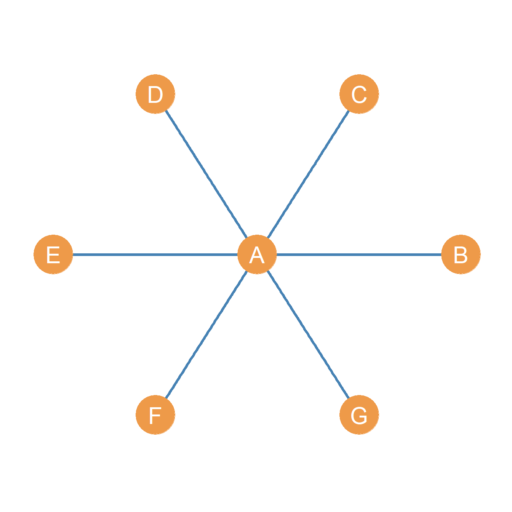
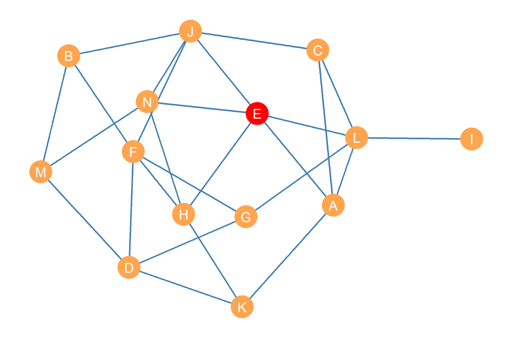
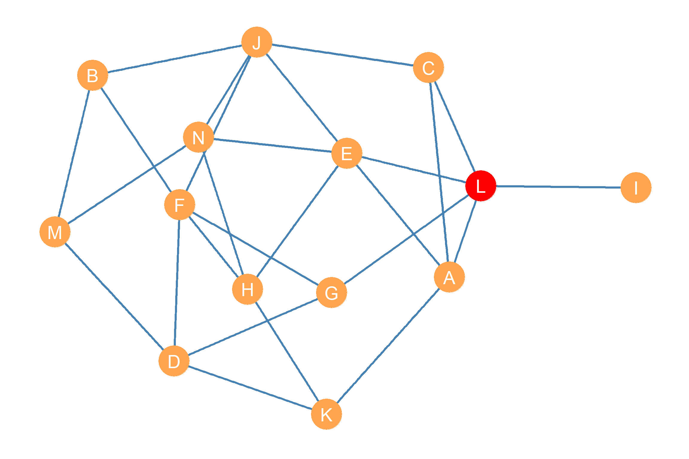

19 Centrality
What is centrality? In terms of graph theory, a centrality metric is a summary index of a node’s position in a graph, based on (sometimes weighted) sums or averages of one of three things (Borgatti and Everett 2006):
- The number of edges that are directly incident upon that node.
- The length of (usually shortest) paths1 that have that node as one of their end nodes.
- The proportion of (usually shortest) paths2 that have that node as one their inner nodes.3
The basic idea behind all centrality metrics is based on the more/more principle. This is the idea that the higher any of the things above is for a node, then the more central that node is in the graph. So a node with more nodes incident upon it (the size of the neighbor set) should be more central. In the same way, a node who can reach many other nodes via the smallest shortest paths, should be more central. Finally, a node standing in the middle of the largest percentage of paths between other nodes should be more central, and so forth.
We can refer to all these things as network goods. The more/principle has a basic measurement implication, which is that centrality should never decrease when a node gains access to more network goods (e.g., one an additional connection) in the network. The more/more centrality principle was described by legendary social network theorist Linton Freeman in a classic paper (Freeman 1979.)
Sociologically, the notion of centrality is tied to such concepts as “status,” “prestige,” “importance,” “influence,” “popularity,” “reachability,” “brokerage,” and many more. So the more central nodes have higher status, are more popular, influential, broker more deals, and so forth. However, these english language descriptors map onto distinct metrics. For instance, “popularity” clearly has to do with the number of connections a node has. Brokerage, on the other hand, has more to do with a node stand in-between paths linking others nodes. Influence, on the other hand, seems to have more to do with the capacity to reach others, and so forth.
Accordingly, all these sociological concepts related to centrality have to be kept distinct from any one centrality metric (remember the three-step shuffle in social network analysis discussed earlier), because the same concept can be measured by more than one centrality metric, and the same metric can point to many distinct sociological concepts, depending on the context, the type of social ties the network is constructed from, and the way either “goods” (e.g., information, advice, support, etc.) or “bads” (e.g., disease, gossip, violence etc.) “flow” through the network (Borgatti 2005).
19.1 The “big three” centrality metrics
Linton Freeman (1979), in the aforementioned paper, defined the “big three” classic centrality metrics, roughly corresponding to the extent that a node accumulates one of the three network goods mentioned above. - So the degree centrality metric deal with nodes that have more edges directly incident upon them (Nieminen 1974). - The closeness centrality metric has to do with nodes that can reach more nodes via smallest shortest paths and thus accumulate as many of these paths in which they figure as the origin node as possible (Sabidussi 1966). - Finally, the betweenness centrality metric has to do with a node’s accumulation of the largest share of shortest paths in which they intermediate between two other nodes, and thus featuring them as one of the inner nodes in the paths between others (Freeman 1977).
Other centrality metrics can be seen as generalizations or special cases of any of these three basic notions (Borgatti 2005).
The rest of the lesson goes over the basic interpretation and calculation (using the graph theory and matrix algebra tools discussed in previous lessons) of “big three” centrality metrics.
19.2 The Star Graph
Freeman showed that the three basic measures reach their theoretical maximum for the central node in a star graph, such as the one shown in Figure 19.1).
A star graph is a graph containing a central or inner node (in Figure 19.1, node A), who is connected to all the other nodes in the graph, called the satellite or outer nodes (in Figure 19.1, nodes B through F). These nodes in contrast have only one connection and that is to the central node, none among themselves.
Because of these restrictions, it is easy to see that if \(G = (V, E)\) is a star graph of order \(n\), then we know that that graph size \(m = |E|\) (the size of the edge set), has to be \(n-1\). So in the example shown in Figure 19.1, \(n =7\) and \(m = n-1 = 7-1=6\). Neat!
19.3 Degree Centrality
The first way of defining centrality is simply as a measure of how many alters an ego is connected to. This simply takes a node’s degree as introduced in the lesson on graph theory, and begins to consider this measure as a reflection of importance of the node in the network. The logic is that those with more direct connections to others, compared to those with fewer, hold a more prominent place in the network.
Once we have constructed the adjacency matrix for the network (A), then degree centrality is easy to calculate. As Equation 19.1) for a given node i the degree centrality is given by summing the entries of its corresponding row.
\[ C_i^{DEG} = \sum_{j= 1}^{n}a_{ij} \tag{19.1}\]
Equation 19.1 thus ranks each node in the graph based on the number of other nodes that it is adjacent to. Just like real life, some nodes will be popular (they will be adjacent to lots of other nodes), while others will be unpopular.
Although it might seem a simple task to just add up the number of connections of each node, that is essentially what the below mathematical equation is doing! Mathematical notation plays an important role in expressing network measures in succinct formats.
For instance, if we were to use Equation 19.1 to calculate the degree centrality of each node from the symmetric adjacency matrix corresponding to the graph shown in Figure 8.1) then we would end up with the following degree centralities for each node:
| A | B | C | D | E | F | G | H | I |
|---|---|---|---|---|---|---|---|---|
| 4 | 3 | 4 | 5 | 3 | 4 | 3 | 3 | 3 |
Table 19.1: Degree centralities of nodes in an undirected graph.
19.3.1 How to Read Equations for Matrix Operations
Before we continue, a note on something obvious. A lot of centrality measures are expressed as equations and these can be hard to interpret initially. Depending on your background in math, you may or may not already know how to interpret Equation 19.1). Essentially, the number at the bottom of the sigma is where to start. The number at the top of the Sigma symbol (\(\Sigma\)) is where to end. The equation to the left is the operation to be performed. Thus, one reads the Equation 19.1 as, starting at column \(j=1\), and ending at the last possible column \(n\) (\(n\) is simply the total number of rows in the matrix, \(n\) means to go to the final value in the matrix), add up all possible values of the cells designated by the row \(i\) and column \(j\) combination in matrix A. Thus, to calculate the degree centrality of each \(j = a, b, c\) in the below matrix, each of the following calculations would be performed.
| a | b | c | |
|---|---|---|---|
| a | - | 1 | 0 |
| b | 1 | - | 1 |
| c | 0 | 1 | - |
\(C_D(a)=aa+ab+ac=1\)
\(C_D(b)=ba+bb+bc=2\)
\(C_D(c)=ca+cb+cb=1\)
In the same way if we had the formula:
\[ C_D(j) = \sum_{i = 1}^{n}a_{ij} \]
Then it would be telling us to sum values of each column \(j\) down each row \(i\):
\(C_D(a)=aa+ba+ca=1\)
\(C_D(b)=ab+bb+cb=2\)
\(C_D(c)=ac+bc+cc=1\)
The sigma notation is useful for summarizing this repetitive process in a simple, condensed form.
19.4 Indegree and Outdegree Centrality
If we are talking about a directed graph, then there are two types of degree centralities that can be calculated. On the one hand, we may be interested in how central a node is in terms of sociability or expansiveness that is how many other nodes in the graph a given node sends links to. This is called the outdegree centrality of that node, written as \(C_i^{OUT}\). As with the undirected case, this is computed by summing across the rows of the asymmetric adjacency matrix corresponding to the directed graph in question, using Equation 19.1:
\[ C_i^{OUT} = \sum_ja_{ij} \tag{19.2}\]
However, in a directed graph, we may also be interested in how popular or sought after by others a given node is. That is, how many other actors send ties to that node. In which case we need to sum across the columns of the asymmetric adjacency matrix, and modify the formula as follows:
\[ C_i^{IN} = \sum_ia_{ij} \tag{19.3}\]
Note that in this version of the equation, we are summing over j (the columns) not over i (the rows) as given by subscript under the \(\sum\) symbol.
For instance, if we were to use equations Equation 19.2 and Equation 19.2 to calculate the outdegree and indegree centrality of each node from the asymmetric adjacency matrix corresponding to the graph shown in Figure 8.2), then we would up with the following centralities for each node:
| A | B | C | D | E | F | G | |
|---|---|---|---|---|---|---|---|
| Outdegre | 2 | 2 | 1 | 1 | 2 | 1 | 2 |
| Indegree | 2 | 3 | 1 | 3 | 0 | 2 | 0 |
Table 19.3: Out and Indegree centralities of nodes in a directed graph.
Just like the degree centrality for undirected graphs, the outdegree and indegree centralities rank each node in a directed graph. The first, outdegree centrality, ranks each node based on the number of other nodes that they are connected to. This is a kind of popularity based on sociability, or the tendency to seek out the company of others. The second, indegree centrality, ranks each node in the graph based on the number of other nodes that connect to that node. This is a kind of popularity based on on being sought after a kind of status.
19.4.1 Normalized Degree Centrality
When we compute the degree centrality of a node, are counting the number of other nodes that they are connected to. Obviously, the more nodes there are to connect to, the more opportunities there will be to reach a larger number. But what happens if we wanted to compare the degree centrality of nodes in two very different networks?
For instance, if your high-school has one thousand people and you have twenty friends, that’s very different from having twenty friends in a high-school of only one hundred people. It seems like the second person, with twenty friends (covering 20% of the population) in a high-school of one-hundred people is definitely more popular than the second person with twenty friends (covering 2% of the population), in a high school with one thousand people.
That’s why Freeman Freeman (1979) proposed normalizing the degree centrality of each node by the maximum possible it can take in a given network. As you may have guessed, the maximum degree in a network is \(N-1\) the order of the graph minus one. Essentialy, everyone but you!
We can compute the normalized degree centrality using the following equation:
\[ C_{i(norm)}^{DEG} = \frac{C_{i}^{DEG}}{N-1} \tag{19.4}\]
Where we just divide the regular degree centrality computed using Equation 19.1 by the order of the graph minus one. This will be equal to \(1.0\) if a person knows everyone and \(0\) is a person knows no one. For all the other nodes it will be a number between zero and one.
Moreover, this measure is sensitive to the order of the graph. Thus, for a person with twenty friends in a high-school of a thousand people, the normalized degree centrality is equal to:
\[ C_{i(norm)}^{DEG} = \frac{20}{1000-1}= 0.02 \tag{19.5}\]
But for the person with the same twenty friends in a high-school of one-hundred people, it is equal to:
\[ C_{i(norm)}^{DEG} = \frac{20}{100-1}= 0.20 \tag{19.6}\]
Indicating that a person with the same number of friends in the smaller place is indeed more central!
19.5 Closeness Centrality
Sometimes it not important how many people you directly connected to. Instead, what is important is that you are indirectly connected to a lot of others. As we saw in the lesson on indirect connectivity, the best way to conceptualize indirect connectivity in social networks is via the idea of shortest paths. So if you can reach the most other people in the network via shortest paths with only a few hops, then you are better connected that someone who has to use longer paths to reach the same other people.

This insight serves as an inspiration for a measure of centrality based on closeness. The closeness between two nodes is the inverse of the geodesic distance them (Bavelas 1950). Recall that the geodesic distance is given by the length of the shortest path linking two nodes in the graph. The smallest the length of the shortest path separating two nodes in the graph, the closer the two nodes and vice versa.
Remember that for any number \(n\), the mathematical operation of taking the inverse simply means dividing one by that number. So, the inverse of \(n\) is \(\frac{1}{n}\). This means that if \(d_{ij}\) is the geodesic distance between nodes i and j in graph \(G\), then the closeness between two nodes is \(\frac{1}{d+_{ij}}\).
The information on the pairwise geodesic distances between every pair of nodes in a given graph is captured in the geodesic distance matrix, as discussed in Chapter 14. For instance, take the graph shown in Figure 19.2. The distance matrix for this graph is shown in Table 19.4.
| E | A | M | L | B | J | G | N | F | H | D | C | K | I | |
|---|---|---|---|---|---|---|---|---|---|---|---|---|---|---|
| E | 0 | 1 | 2 | 1 | 2 | 1 | 2 | 1 | 2 | 1 | 3 | 2 | 2 | 2 |
| A | 1 | 0 | 3 | 1 | 3 | 2 | 2 | 2 | 3 | 2 | 2 | 1 | 1 | 2 |
| M | 2 | 3 | 0 | 3 | 1 | 2 | 2 | 1 | 2 | 2 | 1 | 3 | 2 | 4 |
| L | 1 | 1 | 3 | 0 | 3 | 2 | 1 | 2 | 2 | 2 | 2 | 1 | 2 | 1 |
| B | 2 | 3 | 1 | 3 | 0 | 1 | 2 | 2 | 1 | 2 | 2 | 2 | 3 | 4 |
| J | 1 | 2 | 2 | 2 | 1 | 0 | 2 | 1 | 1 | 2 | 2 | 1 | 3 | 3 |
| G | 2 | 2 | 2 | 1 | 2 | 2 | 0 | 3 | 1 | 2 | 1 | 2 | 2 | 2 |
| N | 1 | 2 | 1 | 2 | 2 | 1 | 3 | 0 | 2 | 1 | 2 | 2 | 2 | 3 |
| F | 2 | 3 | 2 | 2 | 1 | 1 | 1 | 2 | 0 | 1 | 1 | 2 | 2 | 3 |
| H | 1 | 2 | 2 | 2 | 2 | 2 | 2 | 1 | 1 | 0 | 2 | 3 | 1 | 3 |
| D | 3 | 2 | 1 | 2 | 2 | 2 | 1 | 2 | 1 | 2 | 0 | 3 | 1 | 3 |
| C | 2 | 1 | 3 | 1 | 2 | 1 | 2 | 2 | 2 | 3 | 3 | 0 | 2 | 2 |
| K | 2 | 1 | 2 | 2 | 3 | 3 | 2 | 2 | 2 | 1 | 1 | 2 | 0 | 3 |
| I | 2 | 2 | 4 | 1 | 4 | 3 | 2 | 3 | 3 | 3 | 3 | 2 | 3 | 0 |
Table 19.4: Geodesic distance matrix for an undirected graph.
As shown in Table 19.4, a node like I, who seems to be at the outskirts of the network, also shows up as having the largest geodesic distances from other nodes in the graph. Other nodes, like E, G, and L seem to be “closer” to others, in terms of having to traverse smaller geodesic distances to reach them.
That means that we can use the distance table to come up with a measure of centrality called closeness centrality for each node. We can do that by adding up the entries corresponding to each row in the distance matrix (\(\sum_j d_{ij}\)), to get a summary the total pairwise distances separating the node corresponding to row i in the matrix from the other nodes listed in each column j.
Note that because closeness is better than “farness,” we would want the node with highest closeness centrality to be the one with the smallest sum of pairwise distances. This can be calculated using the following equation:
\[ C_i^{CLOS} = \frac{1}{\sum_jd_{ij}} \tag{19.7}\]
In Equation 19.7, the denominator is the sum across each column j, for each row i in Table 19.4 which corresponds to the distance between node i and each of the other nodes in the graph j (skipping the diagonal cell when \(i=j\), because the geodesic distance of node to itself is always zero!).
As noted, we take the mathematical inverse of this quantity, dividing one by the sum of the distances, so that way, the smallest number comes out on top and the bigger number comes out on the bottom (since, as we said, we want to measure closeness not “farness.”)
Let’s see how this work for the graph in Figure 19.2. First, we get the row sums of geodesic distances from Table 19.4. These are shown in the first column of Table 19.5, under the heading “Sum of Distances.” This seems to work; node \(E\) has the smallest number here (\(\sum_j d_{Ej} = 22\)) suggesting it can reach the most nodes via the shortest paths. Node \(I\) has the largest number (\(\sum_j d_{Ij} = 35\)) indicating it is the most isolated from the other nodes.
| Sum of Distances (d) | Inverse (1/d) | Normalized (N-1/d) | |
|---|---|---|---|
| E | 22 | 0.045 | 0.59 |
| A | 25 | 0.040 | 0.52 |
| M | 28 | 0.036 | 0.46 |
| L | 23 | 0.043 | 0.57 |
| B | 28 | 0.036 | 0.46 |
| J | 23 | 0.043 | 0.57 |
| G | 24 | 0.042 | 0.54 |
| N | 24 | 0.042 | 0.54 |
| F | 23 | 0.043 | 0.57 |
| H | 24 | 0.042 | 0.54 |
| D | 25 | 0.040 | 0.52 |
| C | 26 | 0.038 | 0.50 |
| K | 26 | 0.038 | 0.50 |
| I | 35 | 0.029 | 0.37 |
Table 19.5: Sum of geodesic distances for each node in an undirected graph and its inverse.
But we want closeness, not farness, so the second column of Table 19.5 shows what happens when we divide one by the number in the second column. Now, node \(E\) has the largest score \(CC^{CLOS}_E = 0.045\) which is what we want.
However, because we are dividing one by a relatively large number, we end up with a bunch of small decimal numbers as centrality scores, and like it happened with degree, this number is sensitive to how big the network is (the larger the network, the more likely there is to be really long short paths). So Freeman (1979) proposes a normalized version of closeness that takes into account network size. It is a variation of Equation 19.7:
\[ C_i^{CLOS} = \frac{N-1}{\sum_jd_{ij}} \tag{19.8}\]
Equation 19.8 is the same as Equation 19.7, except that instead of dividing one by the sum of distances, we divide \(N-1\) by the sum of distances, where \(N\) is the order of the graph (the number of nodes). In this case, \(N=14\).
Normalizing the sum of distances shown in the second column of Table 19.5 according to Equation 19.8, gives us the centrality scores shown in the fourth column of the table, under the heading “Normalized.” These scores range from zero to one, with one being the maximum possible closeness centrality score for that graph.
The normalized closeness centrality scores listed in the fourth column of Table 19.5 agree with our informal impressions. Node I comes out at the bottom (\(CC_I^{CLOS} = 0.37\)), showing it to be the one with the least closeness centrality, given the relatively large geodesic distances separating it from the other nodes in the graph. Node E (marked red in Figure 19.2) comes out on top (\(CC_E^{CLOS} = 0.59\)), given its relative geodesic proximity to other nodes in the graph.
As we will see later, having closeness centrality information for nodes in a graph can be useful. For instance, if Figure 19.2 was a social network, and we wanted to spread an innovation or a new product among the actors in the fastest amount of time, we would want to give it to node E first. Note however that if something bad (like a disease) was spreading across the network, then it would also be very bad if actor E got it first!4
19.6 Houston, We Have a Problem
So far, so good. Closeness seems to be a great measure of node importance, giving us a sense of who can reach most others in a network in the most efficient way. However, what would happen if we tried to compute closeness centrality for a disconnected graph like the one shown in Figure Figure 7.2 (b)? Well, the shortest paths distance matrix for that graph looks like the one in Table 19.6.
| A | B | C | D | E | F | G | H | I | |
|---|---|---|---|---|---|---|---|---|---|
| A | 0 | 1 | 1 | 1 | 1 | Inf | Inf | Inf | Inf |
| B | 1 | 0 | 1 | 1 | 2 | Inf | Inf | Inf | Inf |
| C | 1 | 1 | 0 | 1 | 1 | Inf | Inf | Inf | Inf |
| D | 1 | 1 | 1 | 0 | 1 | Inf | Inf | Inf | Inf |
| E | 1 | 2 | 1 | 1 | 0 | Inf | Inf | Inf | Inf |
| F | Inf | Inf | Inf | Inf | Inf | 0 | 1 | 1 | 1 |
| G | Inf | Inf | Inf | Inf | Inf | 1 | 0 | 1 | 1 |
| H | Inf | Inf | Inf | Inf | Inf | 1 | 1 | 0 | 1 |
| I | Inf | Inf | Inf | Inf | Inf | 1 | 1 | 1 | 0 |
Table 19.6: Geodesic distance matrix for an undirected, disconnected graph.
Note that in Table 19.6, pairs of nodes that cannot reach one another in the disconnected graph, get a geodesic distance of “Inf” (infinity) in the respective cell of the geodesic distance matrix. This is a problem because when we compute the row sums of the geodesic distance matrix to try to calculate centrality according to Equation 19.7, we get the “numbers” shown in Table 19.7.
| A | B | C | D | E | F | G | H | I |
|---|---|---|---|---|---|---|---|---|
| Inf | Inf | Inf | Inf | Inf | Inf | Inf | Inf | Inf |
Table 19.7: Row sums of a geodesic distance matrix from a disconnected graph.
So that’s a bummer since all the “numbers” in Table 19.7, are just infinity. Not to get too philosophical, but the problem is that when you add any number to “infinity,” the answer is, well, infinity.5 This means that closeness centrality is only defined for connected graphs. When it comes to disconnected graphs, we are out of luck.
Thankfully, there is a solution develoed by Beauchamp (1965). It consists of a modification of Equation 19.7 called harmonic closeness centrality. The formula goes as follows:
\[ C_i^{HARM} = \frac{1}{N-1}\sum_j\frac{1}{d_{ij}} \tag{19.9}\]
Now, this might seem like we just re-arranged the stuff in Equation 19.8, and indeed that’s what we did! But the re-arrangement matters a lot, because it changes the order in which we do the various arithmetic operations (Boldi and Vigna 2014).
So, in English, while Equation 19.8 says “first sum the geodesic distances for each node (to get the denominator), and then divide \(N-1\) by this sum,” Equation 19.9 says “first divide one by the geodesic distance, and then sum the result of all these divisions, and then multiply this sum by one over \(N-1\).
Once again, the philosophy of mathematical infinity kicks in here, since the main difference is that one divided by infinity is actually a real number: zero.6
So let’s check by taking every entry in Table 19.6 and dividing one by the number in each cell (except for the diagonals, which we don’t care about). The results are shown in Table 19.8.
| A | B | C | D | E | F | G | H | I | |
|---|---|---|---|---|---|---|---|---|---|
| A | 0 | 1.0 | 1 | 1 | 1.0 | 0 | 0 | 0 | 0 |
| B | 1 | 0.0 | 1 | 1 | 0.5 | 0 | 0 | 0 | 0 |
| C | 1 | 1.0 | 0 | 1 | 1.0 | 0 | 0 | 0 | 0 |
| D | 1 | 1.0 | 1 | 0 | 1.0 | 0 | 0 | 0 | 0 |
| E | 1 | 0.5 | 1 | 1 | 0.0 | 0 | 0 | 0 | 0 |
| F | 0 | 0.0 | 0 | 0 | 0.0 | 0 | 1 | 1 | 1 |
| G | 0 | 0.0 | 0 | 0 | 0.0 | 1 | 0 | 1 | 1 |
| H | 0 | 0.0 | 0 | 0 | 0.0 | 1 | 1 | 0 | 1 |
| I | 0 | 0.0 | 0 | 0 | 0.0 | 1 | 1 | 1 | 0 |
Table 19.8: Reciprocal of the geodesic distance matrix for an undirected, disconnected graph.
Beautiful! Now, instead of weird “Inf”s we have zeroes, which is great because we can add stuff to zero and get a real number back. We can then apply Equation 19.9 to the numbers in Table 19.8 (e.g., computing the sum of each row and then multiplying that by \(\frac{1}{N-1}\)) to get the harmonic closeness centrality for each node in Figure 7.2 (b). These are shown in Table 19.9.
| A | B | C | D | E | F | G | H | I |
|---|---|---|---|---|---|---|---|---|
| 0.5 | 0.44 | 0.5 | 0.5 | 0.44 | 0.38 | 0.38 | 0.38 | 0.38 |
Table 19.9: Harmonic Closeness Centrality scores for nodes in a disconnected, undirected graph.
Great! Now we have a measure of closeness centrality we can apply to all kinds of graphs, whether they are connected or disconnected.
19.7 Betweenness Centrality
Recall that in our discussion of shortest paths between pair of nodes in the lesson on indirect connections, we noted the importance of the inner nodes that intervene or mediate between a node that wants to reach another one. Nodes that stand in these brokerage or gatekeeper slots in the network, occupy an important position (Marsden 1983), and this is different from having a lot of contacts (like degree centrality), or being able to reach lots of other nodes by traversing relatively small distances (like closeness centrality). Instead, this is about being in-between the indirect communications of other nodes in graph. We can compute a centrality metric for each node called betweenness centrality that captures this idea Freeman (1980).

For instance, let’s say you were actor K in the network shown in Figure 19.2, and you wanted to know who is the person that you depend on the most to communicate with actor J. Here dependence means that you are forced to “go through them” if I wanted to reach N via a shortest path. One way K could figure this out is by listing every shortest path having them as the origin node and having N as the destination node. After you have this list, you can see which of other other nodes shows up as an inner node—an intermediary or gatekeeper—in those paths the most times.
This shortest path list would look like this:
\(\{KH, HF, FJ\}\)
\(\{KD, DF, FJ\}\)
\(\{KH, HN, NJ\}\)
\(\{KA, AC, CJ\}\)
\(\{KA, AE, EJ\}\)
\(\{KH, HE, EJ\}\)
There are six shortest paths of length three indirectly connecting actors K and J in Figure 19.2), with nodes \(\{A, C, D, E, F, H, N\}\) showing up as an inner node in at least one of those paths. To see which other actor in the network is the most frequent intermediary between J and K, we can create a list with the number of times each of these nodes shows up as an intermediary in this shortest path list. This would look like this:
| Node | Freq. | Prop. |
|---|---|---|
| A | 2 | 0.33 |
| C | 1 | 0.17 |
| D | 1 | 0.17 |
| E | 2 | 0.33 |
| F | 2 | 0.33 |
| H | 3 | 0.50 |
| N | 1 | 0.17 |
Table 19.10: Intermediaries between nodes J and K
So it looks like, looking at the second column of Table 19.10, that H is the other actor that J depends on the most to reach K. A better way to quantify this, is to actually look at the proportion of paths linking J and K that a particular other node (like H) shows up in. Let’s call this \(p_{K(H)J}\) which can be read as “the proportion of paths between K and J featuring H as an inner node.” This is shown in the third column of Table 19.10 We can write this in equation form like this:
\[ p_{K(H)J} = \frac{g_{K(H)J}}{g_{KJ}} = \frac{3}{6} = 0.5 \tag{19.10}\]
In Equation 19.10, \(g_{K(H)J}\) is the number of shortest paths linking K and J featuring H as an inner node, and \(g_{KJ}\) is the total number of paths linking K and J. Freeman (1980) calls this measure the pair-dependency of actor K on actor H to reach a given node J. In this case, \(g_{K(H)J} = 3\) and \(g_{KJ} = 6\), which means that actor K depends on actor H for fifty percent of their shortest path access to J. Making H the actor in the network J depends on the most to be able to reach J.
Generalizing this approach, we can do the same for each triplet of actors i, j, and k in the network. This is the basis for calculating betweenness centrality. That is, we can count the number of times k stands on the shortest path between two other actors i and j. We can all this number \(g_{i(k)j}\). We can then divide it by the total number of shortest paths linking actors i and j in the network, which we refer by \(g_{ij}\). Remember that two actors can be indirectly linked by multiple shortest paths of the same length, and that we can figure out how many short paths links pairs of actors in the network using the shortest paths matrix.
This ratio, written \(\frac{g_{i(k)j}}{g_{ij}}\) then gives us the proportion of shortest paths in the network that have i and j as the end nodes and that feature k as an intermediary inner node. This can range from zero (no shortest paths between i and j feature node k as an intermediary) to one (all the shortest paths between i and j feature node k as an intermediary).
We can then use the following equation to compute the average of this proportion for each node k across each pair of actors in the network i and j:
\[ C_k^{BET} = \sum_i \sum_j \frac{g_{ikj}}{g_{ij}} \tag{19.11}\]
Computing this quantity for the graph shown in Figure 19.3, yields the betweenness centrality scores shown in Table 19.11.
| A | B | C | D | E | F | G | H | J | K | L | M | N | I |
|---|---|---|---|---|---|---|---|---|---|---|---|---|---|
| 5 | 1.5 | 3 | 6.8 | 11.4 | 9.3 | 6.3 | 4.8 | 10.8 | 3.7 | 16.4 | 2.8 | 5.3 | 0 |
Table 19.11: Betweenness centrality scores.
The numbers in the Table can be readily interpreted as percentages. Thus, the fact that node J has a a betweenness centrality score of 10.8 tells us that they stand in about 11% of the shortest paths between pairs of nodes in the graph. Interestingly, as shown in Figure 19.3, the node that ends up with the highest betweenness score is L (\(C_L^{BET} = 16.4\)), mostly due to the fact that node I, who has the lowest possible betweenness score of zero, depends on this node for access to every other actor in the network.
Note also that two different nodes end up being ranked first on closeness and betweenness centrality in the same network (compare the red nodes in Figure 19.2 and Figure 19.3). This tells us that closeness and betweenness are analytically distinct measures of node position. One (closeness) gets at reachability, and the other (betweenness) gets at intermediation potential.
19.8 The Big Three Centralities in the Star Graph
Degree, Closeness, and Betweenness centralities have an interesting property that provides a conceptual connection between them (Freeman 1979). Consider the star graph shown in Figure 19.1 with central node A. The degree, closeness, and betweenness centralities of the different nodes are shown in Table 19.12).
Of course, by definition, we know beforehand that the central node in a star graph has to have the highest degree, since the degree of peripheral nodes is fixed to one and the degree of the central node is always \(n-1\), where \(n\) is the graph order.
However, note also that the central node has to have the highest closeness, since it is directed by a path of length one (and edge) to every peripheral node, but each peripheral node can only reach other peripheral nodes in the graph by a path of length two. They are farther away from other nodes than the central node.
Finally, note that the central node in the star will also always have the highest betweenness because each of the paths of length two connecting every pair of peripheral nodes to one another has to include the central node. So it serves as the intermediary between any communication between peripheral nodes.
| A | B | C | D | E | F | G | |
|---|---|---|---|---|---|---|---|
| Degree | 6.0 | 1.0 | 1.0 | 1.0 | 1.0 | 1.0 | 1.0 |
| Closeness | 8.2 | 4.5 | 4.5 | 4.5 | 4.5 | 4.5 | 4.5 |
| Betwenness | 15.0 | 0.0 | 0.0 | 0.0 | 0.0 | 0.0 | 0.0 |
Table 19.12: Centralities in a star graph of order 7.
The mathematical sociologist Linton Freeman (1979) thus thinks that the “big three” centrality measures are the big three precisely because they are maximized for the central node in a star graph.
References
Bavelas, Alex. 1950. “Communication Patterns in Task-Oriented Groups.” The Journal of the Acoustical Society of America 22 (6): 725–30.
Beauchamp, Murray A. 1965. “An Improved Index of Centrality.” Behavioral Science 10 (2): 161–63.
Boldi, Paolo, and Sebastiano Vigna. 2014. “Axioms for Centrality.” Internet Mathematics 10 (3-4): 222–62.
Borgatti, Stephen P. 2005. “Centrality and Network Flow.” Social Networks 27 (1): 55–71.
Borgatti, Stephen P, and Martin G Everett. 2006. “A Graph-Theoretic Perspective on Centrality.” Social Networks 28 (4): 466–84.
Freeman, Linton C. 1977. “A Set of Measures of Centrality Based on Betweenness.” Sociometry 40 (1): 35–41.
———. 1979. “Centrality in Social Networks Conceptual Clarification.” Social Networks 1 (3): 215–39.
———. 1980. “The Gatekeeper, Pair-Dependency and Structural Centrality.” Quality and Quantity 14 (4): 585–92.
Marsden, Peter V. 1983. “Restricted Access in Networks and Models of Power.” American Journal of Sociology 88 (4): 686–717.
Nieminen, Juhani. 1974. “On the Centrality in a Graph.” Scandinavian Journal of Psychology 15 (1): 332–36.
Sabidussi, Gert. 1966. “The Centrality Index of a Graph.” Psychometrika 31 (4): 581–603.
Or trails, or walks.↩︎
Or trails, or walks.↩︎
If you need a refresher on these graph theory concepts, see the lesson indirect connectivity in social networks.↩︎
For more details, see https://byjus.com/maths/infinity/↩︎
Once again, see https://byjus.com/maths/infinity/↩︎